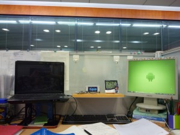

办公桌改革 | 仙剑奇侠传五年代问题
一直觉得办公桌的空间不够用，原来的时候桌上满满当当的书，后来经过我重新分类整理，把自己常用的书籍放到抽屉中，用的时候打开抽屉就可取到，而常常会有人借用的书籍，留在了桌面上。桌面上的书本和电子产品，都在下面设计了防水设施，防止在桌上打倒水杯弄湿书本这样的悲剧发生。
可是后来，又觉得不够用，但是一直也没来得及整理。
今天凌晨在改matlab程序的时候，突然有个idea闪过脑海，我可以在键盘上方搭一个二层的平台，用了放一些小东西。
今天早上起来（严格的说应该是今天下午起床后）我就开始着手设计安装。用到的材料有：
木板、绳子（我手头正好有别人以前给的传说中的降落伞绳材料，不知道真假，反正拿刀子个割半天割不断，才割了两段，手上就起泡了）、挂钩、用过的中性笔芯、透明胶带。
下面是成品：

除了绳子露在那里不好看，其他的还好，关键是，我试了下，可以承担几本词典。
制作的过程就算了，看样子就知道怎么做了。我本想做一个可以左右滑动的，可是装好之后发现有个bug，不得已只好做成固定式的。没材料真烦人。
以前买的仙剑奇侠传五，我一直没玩。昨天装上看了看，感觉还不错。很喜欢丹枫谷那段音乐。
关于仙剑五的年代问题，我截了几张图放在豆瓣，作为证明：
http://www.douban.com/photos/photo/1160591347/
上面几张图说明，仙剑奇侠传五的故事发生在仙一之后数十年（这张图）。

{kind=link}
我一眼扫过去，吓我一跳，我以为你这是一个超大的办公室呢！右面的显示器是一个超大屏幕，就是舞台上那种。现在想来这种错觉应该是上方远处的灯光造成的……
不过，你的笔记本电脑让我能冷静地看清一切。
布置得很棒，赞一个！
那个小人处应该是表吧？表左面蓝色白框的是什么东西？
笔记本电脑下面的支架是怎么个情况？有卖的？
看到你把笔记本电脑摆这么高，我想起了一个以前就想到的想法：人在学习时，头（或者说是眼睛）朝向的方向与人的记忆力之间是否存在关系？例如，看桌上的纸质课本时，我们的头部要朝向下方；而看电脑上的电子材料时，头部要朝向水平方向；而有时，我们还躺在床上看书，头部是朝上的。那么，这几种情况下，人的记忆力有什么不同吗？
我的想法来源于自己的经历，个人感觉朝下看记忆力比较高，水平看记忆力要下降一些，但理解力却比较高（这就是为什么思考问题时有时会把低着的头抬起望向远方）；而仰着看的记忆力最差，但想像力却好像比较高（躺着的时候能想很多很多的东西，就像白日梦一样）。
笔记本下面是三个书立，摆成合适的形状，就可以稳定的托住笔记本。
表（严格的说应该是温湿度计）左边是手机。
似乎低头的时候视野内杂七杂八的东西少，所以大脑需要处理的东西少，所以记忆好吧。抬头的时候视野内的乱七八糟的东西太多，扰乱人心。
仔细看你的笔记本电脑屏幕，会从中看到小马正在拍照，而且右手边似乎还有个人……
在这里评论时，会看到提示信息，如下：
Enter Your Comment…
Help:
Ⅰ. Name and mail are not required. However, it is better to let us know them.
Ⅱ. LaTeX should be enclosed with math environment,eg.,
\(\LaTeX\) .
Ⅲ. Click the button at the corner to activate QQ云输入法.
按说，点击时这些东西会自动消失，但我这里不自动消失，必须手动删除。（Chrome）
我知道这个。大概是因为某些js加载不完备造成的。没办法，google很多js被墙了。